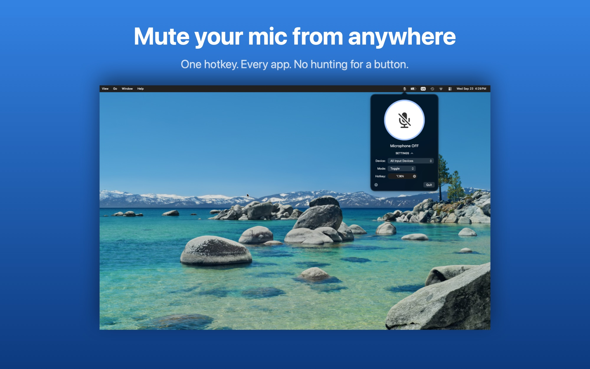
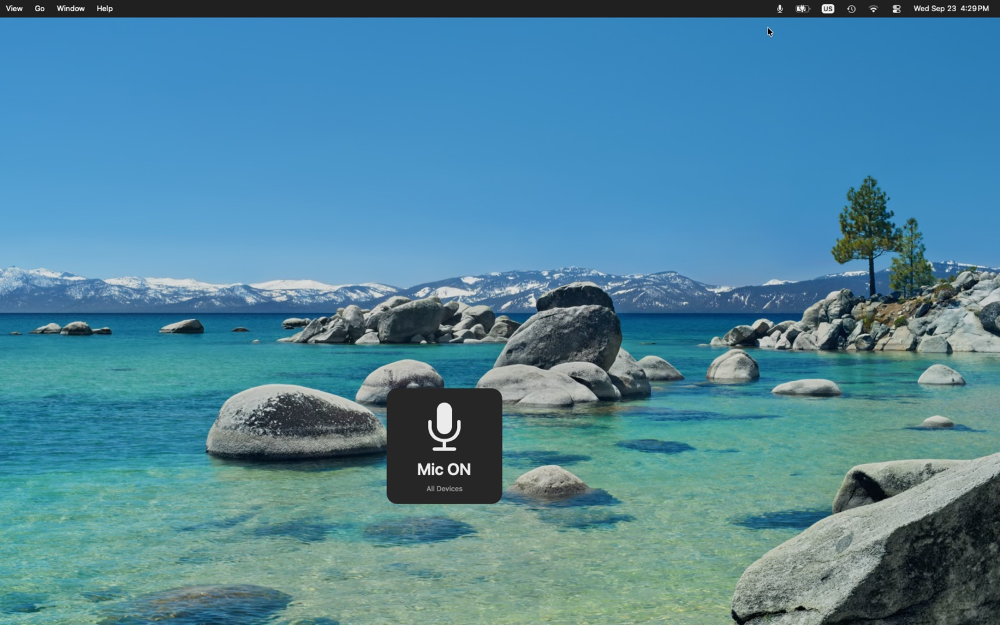
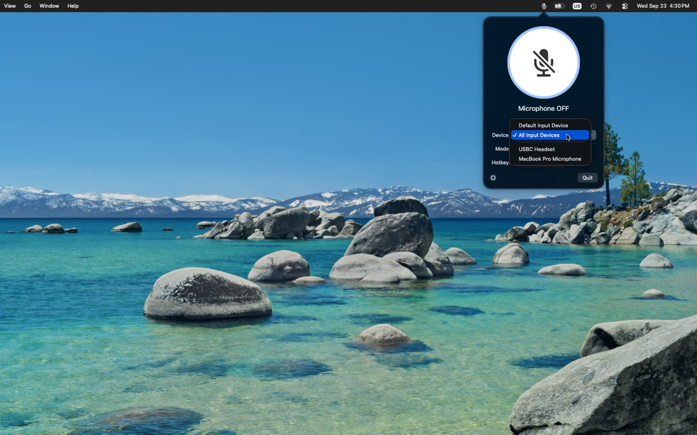

Free · macOS 14 Sonoma or later · Apple silicon and Intel · Notarized by Apple

What it does
One hotkey, anywhereMute and unmute without leaving the app you're in. Zoom, Meet, Teams, Discord, OBS, anything.
Toggle or push-to-talkTap to switch states, or hold your key to talk and release to go quiet again.
Every mic, or just oneMute the system default, a specific microphone, or all connected inputs at once.
You always knowThe menu bar icon shows the current state and an on-screen indicator confirms every change.
Muted at the hardware levelApps receive silence, rather than a polite request to stop listening.
Handles real lifePlug a headset in while muted and it is muted too. Force-quit while muted and the next launch restores your mics.
In use

A brief on-screen confirmation every time the state changes.

Choose the default input, one specific microphone, or all of them.
Privacy
MicDrop collects nothing. It never records audio and never asks for microphone
access: it only changes the mute and input-volume settings of the devices you pick. No analytics, no
accounts, no tracking. The direct download checks GitHub for updates; the Mac App Store version makes
no network requests at all.
MicDrop replaces
MuteKey, which is Intel-only and stops
working once macOS drops Rosetta support. Same idea, rebuilt natively for Apple silicon: one key, mic off.